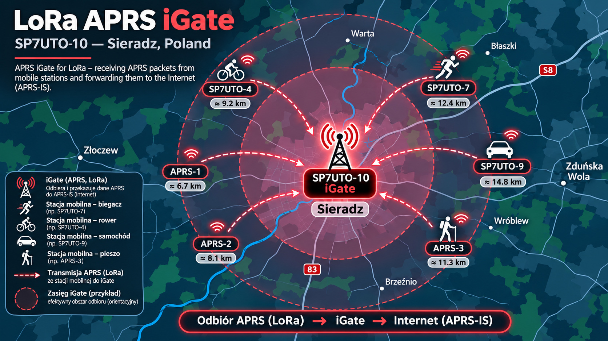

Mapa poglądowa / Illustrative mapLoRa APRS iGate
Generator i edytor konfiguracji JSON. Nowa konfiguracja lub import istniejącej kopii. Działa lokalnie w przeglądarce.
Configuration generator and JSON editor. Create a new configuration or import an existing backup. Runs locally in your browser.
Uruchom generator / Launch configuration generatorWiki PL/EN · GitHub · Original firmware: Ricardo Guzman CA2RXU
Experimental SP7UTO fork. No device flash or production release. / Wersja eksperymentalna. Bez flashowania urządzenia.